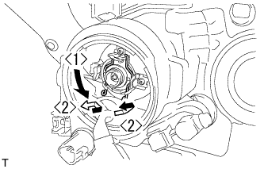

Discharge Headlight Bulb Installation |
| 1. Install Discharge Headlight Bulb |
 |
In the order shown in the illustration, lock the set spring and install the discharge headlight bulb.
 |
Turn in the direction indicated by the arrow in the illustration and connect the socket of the headlight light control computer assembly LH.
| 2. Install Headlight Cover |
 |
Turn the headlight cover in the direction of the arrow shown in the illustration to install it.
| 3. Air Cleaner Inlet NO.1 Installation |
 |
Engage the 2 claws.
Install air cleaner inlet NO.1 with the clips.
| 4. Install Radiator Upper Air Deflector |
Install the radiator upper air deflector with the 8 clips.
| 5. Connect Battery Negative Terminal |
| 6. Setting Procedure When Disconnecting/Reconnecting Battery Terminal |
)